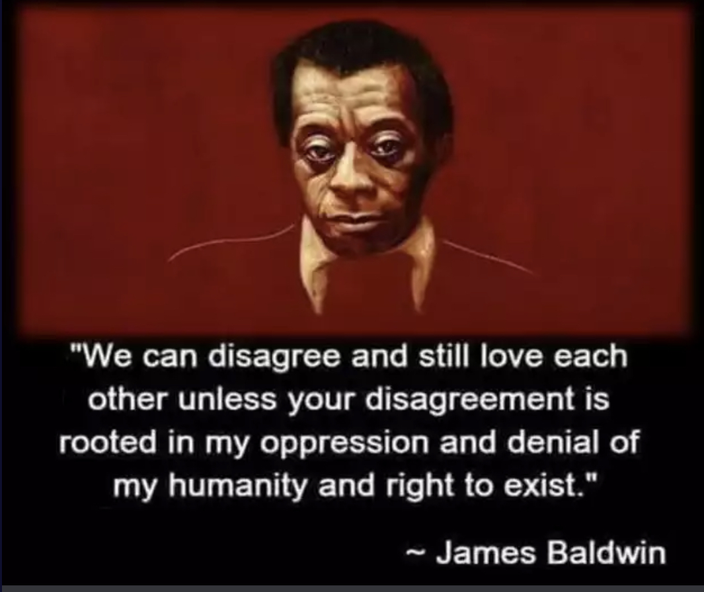
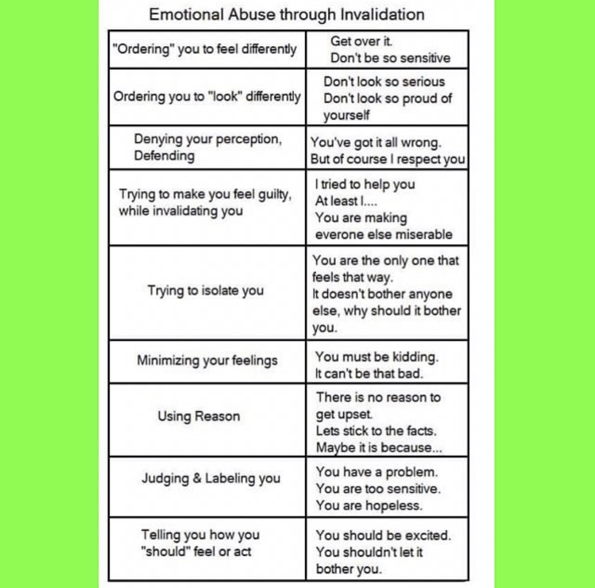

Evaluation and Clear Thinking
Sometimes I get stuck on making decisions, coming to terms with an idea or choice, or just plain seeing through the muck.
Here are the things that help me get out of those ruts.
Making decisions #
- To figure out if you really want something in life, give yourself permission to explore the alternative and say no. Live with it for a few weeks. See how it feels after that.
- To live without regrets doesn’t mean making all the right choices. It means fully embracing the ones you do get to make and taking time to grieve the ones you didn’t.
- What’s the cost of not doing the thing?
Fact vs opinion #
- If a security camera were observing the situation, what would it say? Is it different than what you would?
- Does this thing I’m doing or buying or downloading serve my goals? Is it the best way out of the rest of the available options to achieve them? If not, look elsewhere.
- Suspect anyone who markets themselves or their company as a world changer. That’s a determination others make, it’s not one that they can proclaim.
Disagreeing #

Seeing through it #
- The harder people (or companies) cling to positivity and happiness, the more likely it is that there’s something truly rotten underneath that isn’t being addressed.
